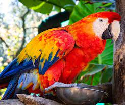
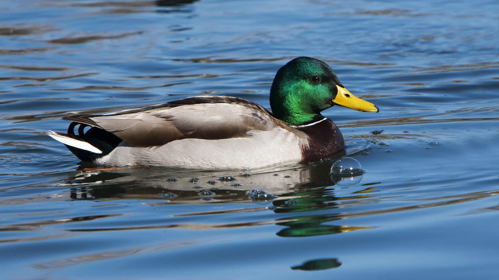
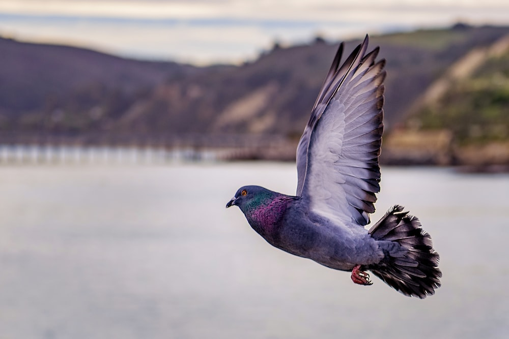

| Bird | Feature |
|---|---|
| Peacock | Peafowl are forest birds that nest on the ground, but roost in trees. They are terrestrial feeders. All species of peafowl are believed to be polygamous. In common with other members of the Galliformes, the males possess metatarsal spurs or "thorns" on their legs used during intraspecific territorial fights with some other members of their kind. |
| Parrot | Numerous challenges are found in studying wild parrots, as they are difficult to catch and once caught, they are difficult to mark. Most wild bird studies rely on banding or wing tagging, but parrots chew off such attachments.[59] Parrots also tend to range widely, and consequently many gaps occur in knowledge of their behaviour. Some parrots have a strong, direct flight. Most species spend much of their time perched or climbing in tree canopies. They often use their bills for climbing by gripping or hooking on branches and other supports. On the ground, parrots often walk with a rolling gait. |
| Duck | Ducks eat food sources such as grasses, aquatic plants, fish, insects, small amphibians, worms, and small molluscs. Dabbling ducks feed on the surface of water or on land, or as deep as they can reach by up-ending without completely submerging.[24] Along the edge of the bill, there is a comb-like structure called a pecten. This strains the water squirting from the side of the bill and traps any food. The pecten is also used to preen feathers and to hold slippery food items. |
| Hen | Hens will often try to lay in nests that already contain eggs and have been known to move eggs from neighbouring nests into their own. The result of this behaviour is that a flock will use only a few preferred locations, rather than having a different nest for every bird. Hens will often express a preference to lay in the same location. It is not unknown for two (or more) hens to try to share the same nest at the same time. If the nest is small, or one of the hens is particularly determined, this may result in chickens trying to lay on top of each other. There is evidence that individual hens prefer to be either solitary or gregarious nesters. |
| Pigeon | Pigeons have made contributions of considerable importance to humanity, especially in times of war.[3] In war the homing ability of pigeons has been put to use by making them messengers. So-called war pigeons have carried many vital messages and some have been decorated for their services. Medals such as the Croix de Guerre, awarded to Cher Ami, and the Dickin Medal awarded to the pigeons G.I. Joe and Paddy, amongst 32 others, have been awarded to pigeons for their services in saving human lives. |